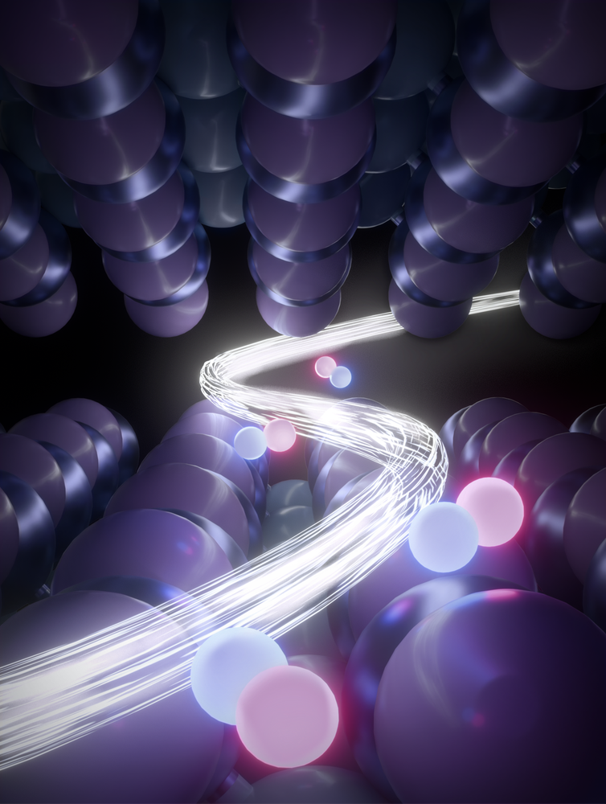

We build photonic integrated circuits (PICs) on various platforms — silicon photonics, silicon nitride, III-V semiconductors, thin-film lithium niobate. Our goal: high-performance, scalable, and energy-efficient solutions for optical information processing, high-bandwidth interconnects, and photonic computing.

We design and make next-gen photonic-crystal lasers (PCSELs) that are super stable, narrow-band, and high-power — perfect for LiDAR, optical communications, and precision measurements.

We study strong light-matter interactions in van der Waals materials — TMDs, moiré superlattices, magnetic materials. We look for interesting quantum phases and collective effects, and explore their applications in on-chip optoelectronics and quantum photonics.

We make nano-electro-mechanical systems (NEMS) with special topological properties, hitting ultra-high frequencies and excellent reliability. This opens up new possibilities for RF signal processing, sensing, and quantum phononics.